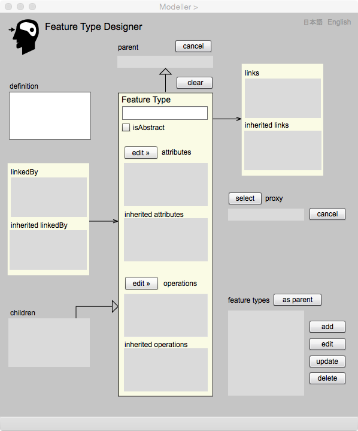

Feature Type
地物型の設計
ここでは，実世界の現象を見て，地物型をどのように設計するか，説明します．既に述べましたが，地物型は複数の属性と操作をもつことができます．また，地物型はより上位の概念をもつ地物型のプロパティを継承することができます．さらに，他の地物型と，関連することができます．例えば，「森林」はより抽象的な地物型である「植生域」を継承するかも知れませんし，「河川」は「橋」と関連するときは，例えば「河川橋梁関連」といった関連型にリンクするでしょう．
地物型は抽象型，または具象型です．抽象型はインスタンスをもたない抽象的な概念を定義するときに指定します．一方，具象型は，インスタンスをもつことができる型です．自治体が都市計画を行う範囲を示す都市計画区域は，市街化区域，市街化調整区域，非線引き区域に分かれますが，例えば，都市計画区域を抽象型，市街化区域，市街化調整区域，非線引き区域を下位の具象型として定義することが出来ます．
抽象型の地物は具象型地物の下位型にはなりません．
Feature Type ページ は，地物型の定義と編集を行うためにあります．その中で，属性及び操作の定義と編集については，このページから起動するAttribute Type ページ と，Operation Typeページ で行います．また，他の地物型との関連については，Apprication Schema Designer から起動するAssociation Type Designer で行います．
Feature Type ページ の操作画面

図１．Feature Type ページの操作画面
表示欄
Feature Type（編集可能）
地物型の名前をここにキーインします．名前はアルファベットで，頭文字は大文字，その他は小文字とします．この名前は一意でなければいけません．もし重複するとエラーになります．また，名前は必ず与えなければいけません．
definition（編集可能）
地物型の意味をここで解説します．
attributes
宣言された属性の名前の一覧が表示されます．属性の宣言は editAttributes ボタンを押して，Attribue Type Designer を表示し，その中で行います．
inherited attributes
より上位の地物型から継承された属性の一覧が表示されます．
operations
宣言された操作の名前の一覧が表示されます．操作の宣言は editOperations ボタンを押して，Operation Type Designer を表示し，その中で行います．
inherited operations
より上位の地物型から継承された操作の一覧が表示されます．
proxy
表現する上で，地物の代理になる属性をproxy属性といいます．この欄には選択されたproxy属性の型の名前が表示されます．地物は必ず一つのproxy属性をもちます．本来そのデータ型は問いませんが，幾何属性や固有の名前などの文字列が当てられることが多いです．特に現在，gittok でproxy になれるのは幾何プリミティブと文字列だけです．これは，例えば数字だと値が重複する可能性があり，ブール値だと他と分別することが困難だからです．
links
この地物型がリンクする関連型の名前の一覧です．関連型にとっては，この地物型は，関連元を示すことになります．関連型の定義は, Application Schema Designer から Association TypeDesignerr を表示させ，その中で行います．
inherited links
より上位のクラスから継承されてきた関連型の名前の一覧です．
linkedBy
この地物型がリンクされる関連型の名前の一覧です．関連型にとっては，この地物型は，関連先を示すことになります．関連型の定義は, Application Schema Designer から Association TypeDesigner を表示させ，その中で行います．
inherited linkedBy
より上位のクラスから継承されてきた，リンクされる関連型の名前の一覧です．
feature types
ここで定義され、追加された地物型の名前の一覧が，ここに表示されます．
parent
定義された地物型の中から一つの地物型を選択し，asParentボタンを押すと，この欄にその名前が表示されます．この型は新たに定義される地物型の上位型になりますので，そのプロパティが全て継承されます．一度宣言したParentを取り消すときには，cancelボタンをおします．
children
ここで指定された地物型が，下位型をもつときは，この欄に名前の一覧が表示されます．
ボタン
isAbstract（編集可能）
ここをチェックすると，地物型は抽象型になります．チェックをはずすと，インスタンスをもつことができる具象型になります．
add
地物型の定義が終了したら，このボタンを押します．すると，地物型の定義が登録され，その名前が feature types に追加表示されます．
edit
feature types 一覧上で適当な地物型を選択した後，このボタンを押すと，地物型の構成要素が Feature Type Modeler 内の各欄に表示され，編集可能になります．
delete
feature types 一覧上で適当な地物型を選択した後，このボタンを押すと，該当する地物型が消去されます．ただし，下位型をもつ場合，他の地物型と関連する場合は，消去することができず，エラーメッセージが表示されます．
asParent
feature types 一覧上で適当な地物型を選択した後，このボタンを押すと，該当する地物型が今編集している地物型の上位型になり，Parent 欄にその名前が表示されます．
cancel
このボタンを押すと，該当する地物型が今編集している地物型の上位型が取り消しになり，Parent 欄からその名前が消えます．
clear
現在表示している地物型のパラメータが全て消去され，新たな地物型の定義が可能になります．
edit attributes
このボタンを押すと，Attribute Type Designer が表示され，属性型の宣言が可能になります．
edit operations
このボタンを押すと，Operation Type Designer が表示され，操作型の宣言が可能になります．
日本語
今あなたが読んでいるドキュメントが表示されます．
English
You can read the tutorial written in English.